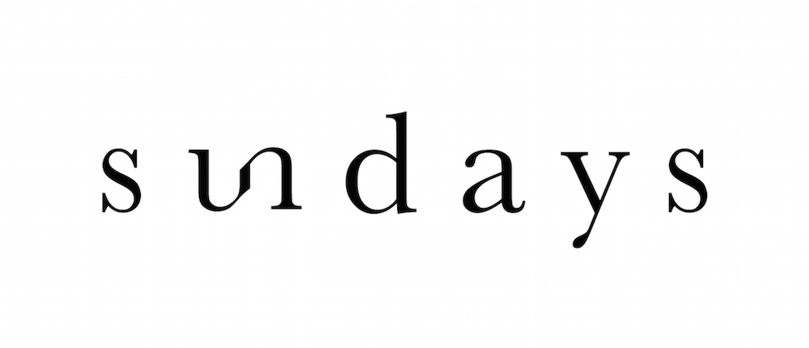

YA-TING WANG |
汪亞婷
YA-TING WANG |
At Condé Nast, I design the interface for our in-house CMS called Copilot.
Key Role: Define problems and opportunities through user interviews, build quick prototypes to help the team decide on a MVP, and run user testings to validate hypotheses.
Please inquire to see more work on Copilot.
A website redesign that empowered editorial story telling and provided engaging experiences.
The redesign has increased 67% digital audience along with editorial strategy.
View Live
Defining new opportunities through stakeholder interviews and user data research

Card sorting exercise with the editorial team to re-organize site structure
We designed homepage for bite-sized editorial curations, and enabled enticing photographies to tell engaging stories through clean layouts


Designed and style coded the company's blog site for the engineering team.
View Live
I presented 3 iterations to the engineering team, these are the ones not chosen.


To celebrate the very first blog post on the site written by our VP of Engineering, I created this gif for his post.

A couple installations I designed while working at Slade Architecture.

Designed and oversaw the production for the DIFFA installation at the Architectural Digest Design Show. In collaboration with Hansgrohe | AXOR.

Wallpaper pattern made up of bathroom fixtures from AXOR.

Fixture design for a women and childen's clothing retail shop in Long Island City. From sketches to realization.


I enjoy creating simple graphics that tell compelling stories.
Sundays is a nail studio focusing on wellness. The logo aims to resonate with the brand's high-quality, clean, and simple image.



My secret job at Condé Nast — swag production.

(top left) ArchDigest.com launch ft. Engineering Lead - Phil Gold (top right) Condé Nast Summer Party 2016 (bottom left) Vulcan, an internal project, launch ft. Principal Architect - Paul Fryzel (bottom right) Wmag.com launch ft. Engineering Lead - Christina Kung & Product Manager - Jennifer Bruno


I optimize experiences through observing little things yet create simple and impactful designs.
- A Syracuse University Industrial & Interaction Design graduate. - 2 years of experience in user-centered design and research working in multi-disciplinary teams. - Currently a product designer at Condé Nast designing a CMS for editors across 12 brands.